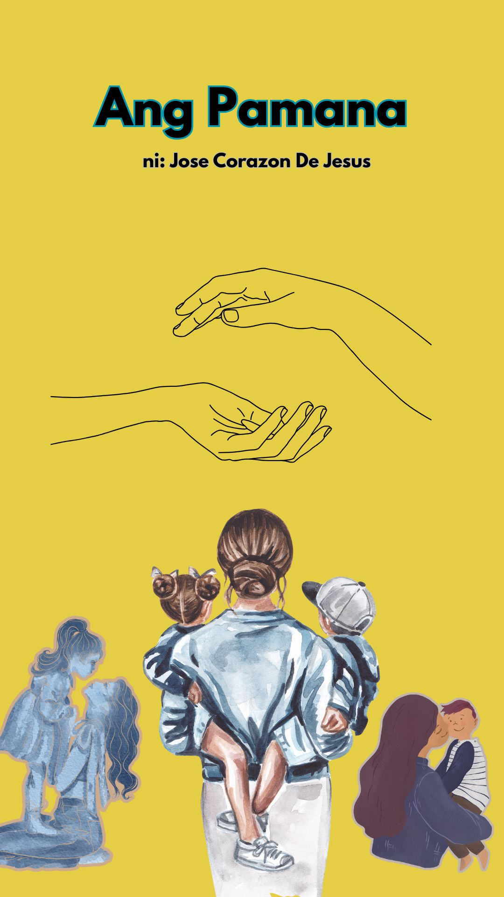
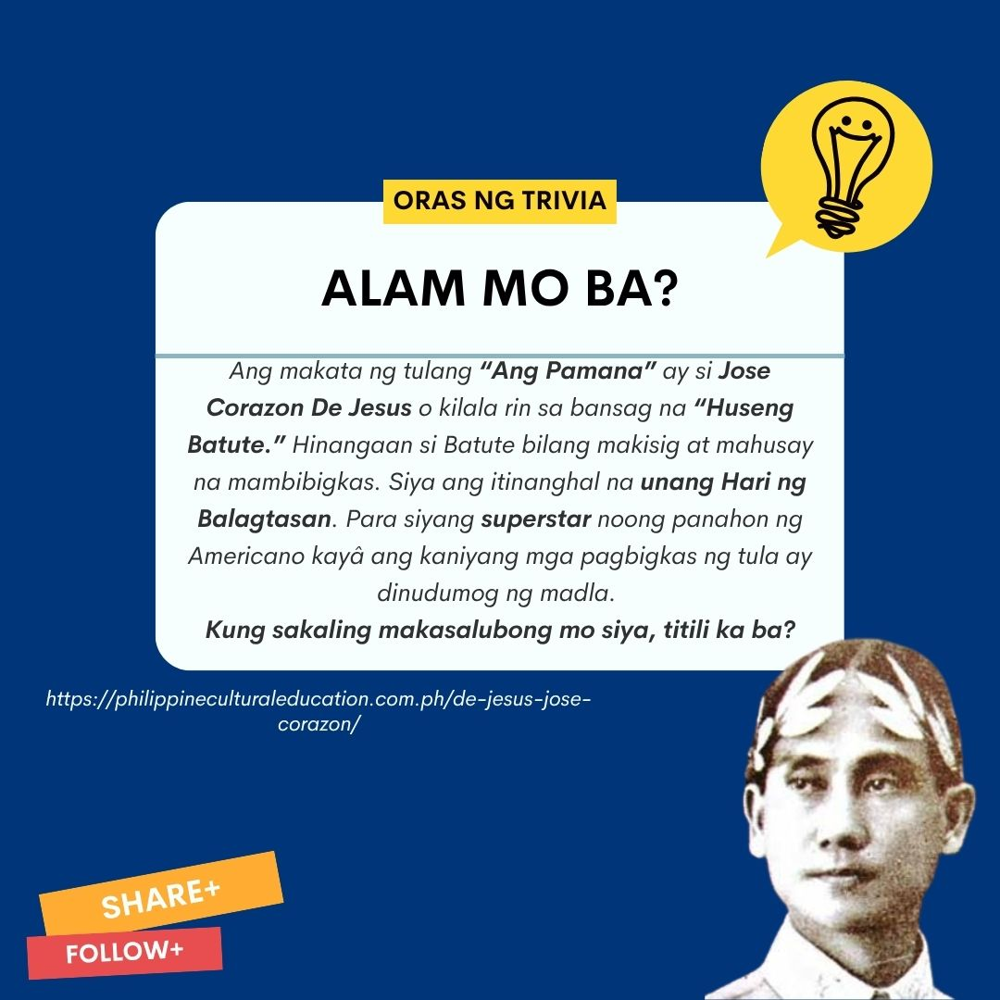
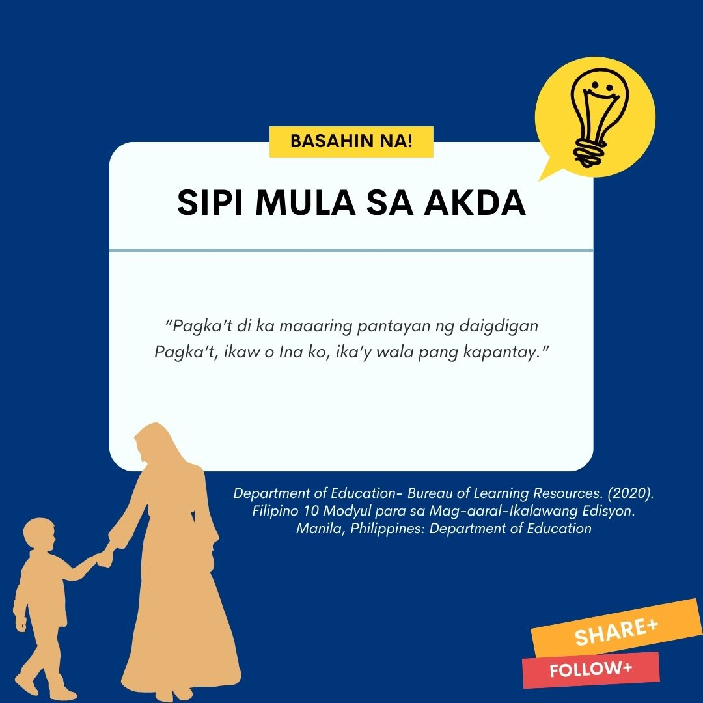
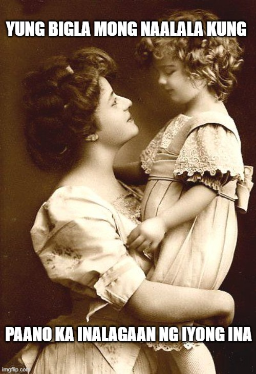
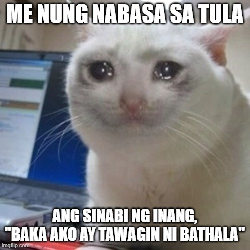

Pinagmulan:Pilipinas
Sanggunian - 2020 "Department of Education- Bureau of Learning Resources. Filipino 10 Modyul para sa Mag-aaral-Ikalawang Edisyon. Manila, Philippines: Department of Education
Ang Pamana
ni: Jose Corazon De Jesus
Isang araw ang ina ko’y nakita kong namamanglaw
Naglilinis ng marumi’t mga lumang kasangkapan.
Sa pilak ng kanyang buhok na hibla na katandaan
Nabakas ko ang maraming taon niyang kahirapan;
Nakita ko ang ina ko’y tila baga nalulumbay
At ang sabi “itong pyano sa iyo ko ibibigay,
Ang kubyertos nating pilak ay kay Itang maiiwan,
Mga silya’t aparador ay kay Tikong nababagay
Sa ganyan ko hinahati itong ating munting yaman.”
Pinilit kong pasayahin ang lungkot ng aking mukha
Tinangka kong magpatawa upang siya ay matuwa,
Subalit sa aking mata’y may namuong mga luha
Naisip ko ang ina ko, ang ina ko na kawawa;
Tila kami iiwan na’t may yari nang huling nasa at
sa halip na magalak sa pamanang mapapala,
Sa puso ko ay dumalaw ang malungkot na gunita
Napaiyak akong tila isang kaawaawang bata
Niyakap ko ang ina ko at sa kanya ay winika.
”Ang ibig ko sana, Ina’y ikaw aking pasiyahin
at huwag nang Makita pang ika’y Nalulungkot mandin,
O, Ina ko, ano po ba at naisipang hatiin
Ang lahat ng munting yamang maiiwan sa amin?”
”Wala naman,” yaong sagot “baka ako ay tawagin ni Bathala
Mabuti nang malaman mo ang habilin?
Iyang pyano, itong silya’t aparador ay alaming
Pamana ko na sa iyo, bunsong ginigiliw.”
“Ngunit Inang,” ang sagot ko, “ang lahat ng kasangkapan
Ang lahat ng yaman dito ay hindi ko kailangan
Ang ibig ko’y ikaw ina, ang ibig ko’y ikaw inang
Hinihiling ko sa Diyos na ang pamana ko’y ikaw
Aanhin ko iyong pyano kapag ikaw ay mamatay
At hindi ko matutugtog sa tabi ng iyong hukay?
Ililimos ko sa iba ang lahat ng ating yaman
Pagkat di ka maaaring pantayan ng daigdigan
Pagkat, ikaw O Ina ko, ika’y wala pang kapantay.”
TRIVIA BOARD


MEME KORNER

